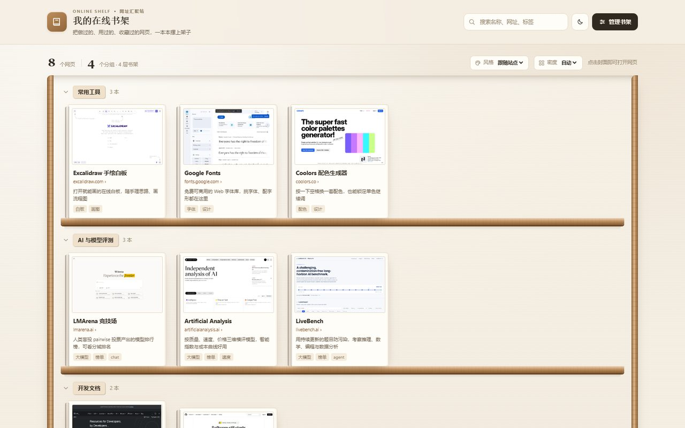
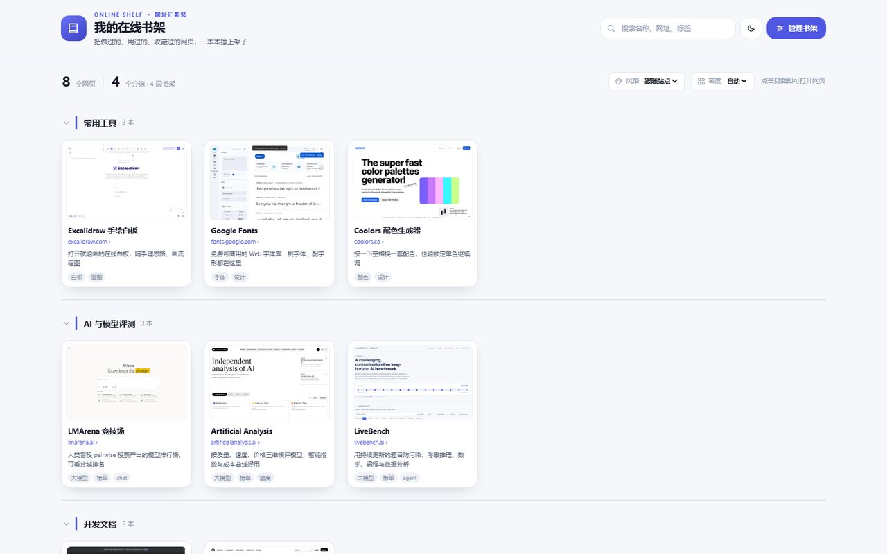
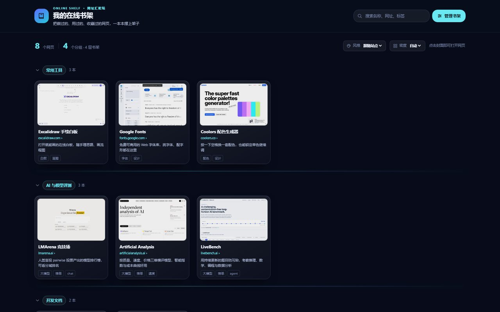
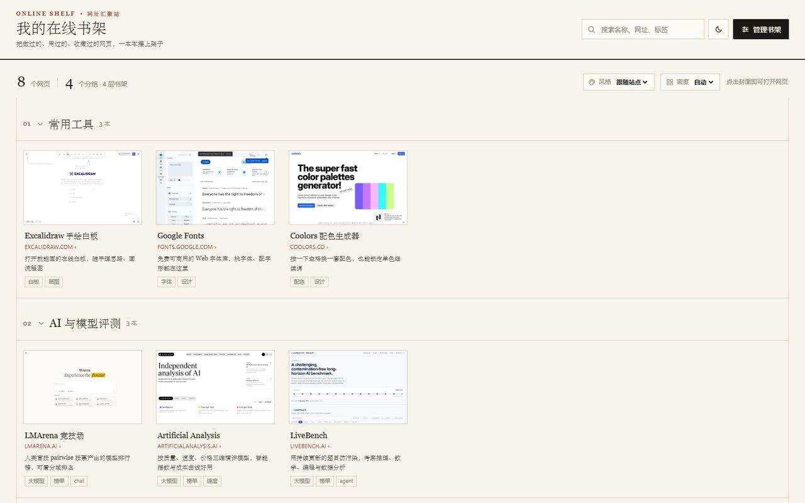
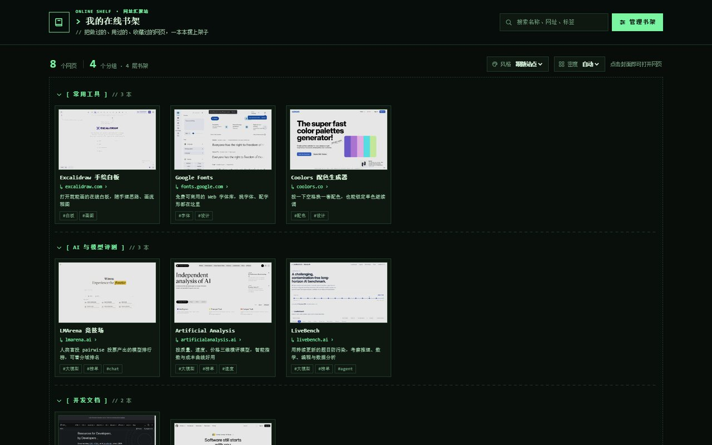

00 / 原始版本
实木书架
wood木纹侧板、实木层板、带书脊的卡片，拟物感最强，有「收藏实体书」的实感。留作对照。

温暖、有收藏感，但装饰偏重
实时预览
STYLE PREVIEW
下面五套是同一个站点、同一份数据的真实渲染截图，功能完全一样：实时截图封面、点图跳转、拖拽排序、分组折叠、5K 宽屏适配都保留，只是换了一层皮。每张图下面可以「本机试用」实际点一点，也可以开新标签看实时效果。
wood木纹侧板、实木层板、带书脊的卡片，拟物感最强，有「收藏实体书」的实感。留作对照。

gallery冷白底、大圆角、细线分隔、靛蓝点缀，卡片像现代作品集。截图封面是绝对主角，最百搭也最耐看。

glass深蓝黑底、蓝紫青双色光晕、毛玻璃卡片、发光分隔线。科技感最强，自带深色配色。

editorial米白纸感、衬线大标题、01 / 02 章节编号、细横线、无边框卡片。偏阅读与出版物，适合带说明文字的收藏。

terminal深墨绿、等宽字、方括号分组、直角虚线、荧绿高光，封面略降饱和。最有性格的一套，信息密度高。

点任意一张的「本机试用」，或直接在书架统计行用「风格」下拉切换。只存在你这台浏览器，不写进仓库，别人看不到。
网址后加 ?skin=glass 可以指定外观，适合存书签或截图。可用值：wood gallery glass editorial terminal。
「管理书架 → 站点设置 → 站点默认外观」里选好，保存后导出或推送 data.json。再跑一次 python tools/sync-seed.py，把首屏皮肤同步进 index.html，访客就不会先闪一下旧样式。
全站默认只是「默认值」，访客仍能用统计行的下拉换成自己喜欢的；选「跟随站点」即回到你设定的默认。